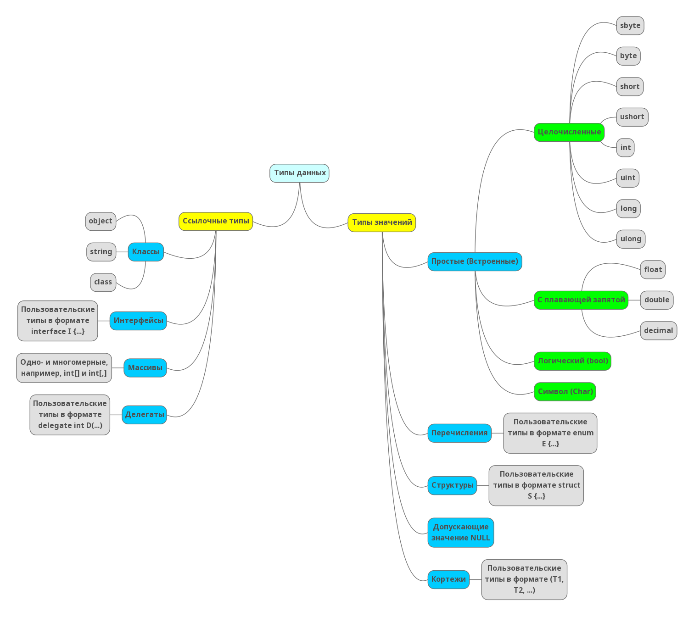
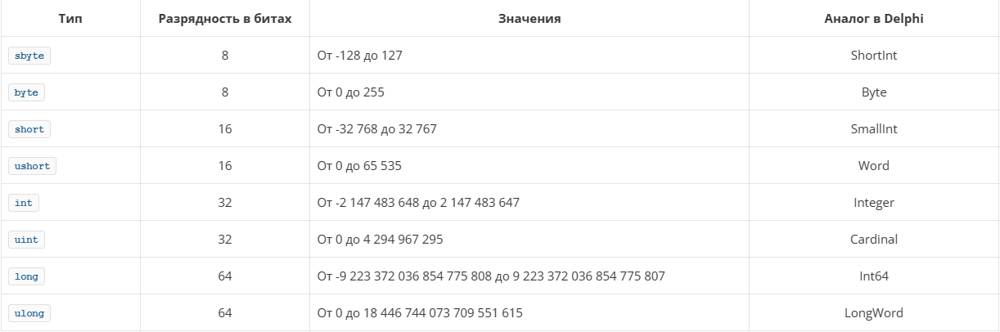
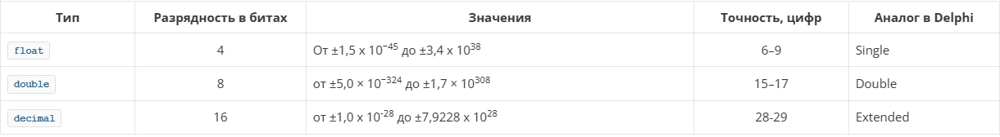
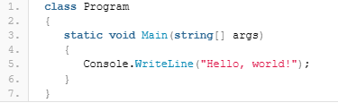
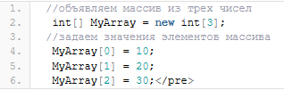

Содержание
Тип данных определяет то,каким образом будет представлена та или иная сущность в приложении, какие значения она может принимать и какие действия над ней можно производить. Вообще, существует несколько способов по которым мы можем сгруппировать различные типы данных, например, в Delphi мы можем разделить все типы данных на целочисленные, вещественные, пользовательские, встроенные, простые, структурированные и так далее.
Опираясь на официальную документацию по языку C#, все типы данных в C# можно представить следующей схемой:

Попробуем разобраться с каждой группой типов данных в C# и представить для дальнейшего удобства изучения нового языка аналогичные типы данных из Delphi. Ниже представлен краткий обзор типов данных C#.
Язык C# предоставляет разработчику восемь различных целочисленных типов данных, представленных в таблице ниже:

Когда мы рассматривали тему литералов в C#, было показано также как переводить целочисленные значения в различные формы (двоичную, шестнадцатеричную и так далее).
Как было сказано выше, от того, какой тип данных мы присвоим переменной зависит то, какой диапазон значений она может принимать. Например, вот такой код вызовет ошибку:
byte i = 300;
так как тип переменная типа byte может принимать значения только от 0 до 255.
Что касается типов данных с плавающей запятой (или точкой — кому как удобнее), то на данный момент в C# представлено всего три таких типа:

Как и в Delphi (да и в любом другом языке программирования) логический тип bool в C# используется для представления логических значений, которые могут иметь значение true (истина) или false (ложь).
Аналогичный тип в Delphi — boolean.
Обработка знаков и строк в C# выполняется в кодировке Unicode.Тип char представляет элемент в кодировке UTF-16, а тип string представляет последовательность элементов в кодировке UTF-16.
Аналогичными типами в Delphi являются char и string. Правда, как известно, в Delphi поддержка Unicode появилась только в версии Delphi 2009.
Тип перечисление определяется в C# следующим образом:
enum Season
{
Spring,
Summer,
Autumn,
Winter
}
По умолчанию порядковые номера перечисляемых значений начинаются с нуля и следуют последовательности, в которой их идентификаторы перечислены в объявлении типа. Как и в Delphi, мы можем переопределить порядковые номера некоторым или всем значениям в объявлении, например, так:
enum Colors
{
Red = 5,
Green,
Blue
};
Теперь порядковые номера у элементов Colors будут следующие: Red = 5, Green = 6, Blue = 7. В отличие от Delphi, в перечислениях C# можно переопределять тип связанных значений констант элементов перечисления. Так, по умолчанию тип связанных значений констант имеет тип int, однако мы можем переопределить тип следующим образом:
enum ErrorCode : ushort
{ None = 0,
Unknown = 1,
ConnectionLost = 100,
OutlierReading = 200
}
Ближайшим аналогом структур C# в Delphi являются записи (record). Структуры в C# можно отнести к пользовательским типа данных. Например, вот так мы можем описать координаты точки, используя структуры:
public struct Coords
{ public Coords(double x, double y)
{ X = x;
Y = y;
}
public double X;
public double Y;
}
Теперь, чтобы воспользоваться структурой и вывести на экран координаты точки, мы можем написать вот такой код:
Coords Point;
Point.X = 100;
Point.Y = 200;
System.Console.WriteLine(Point.X+" "+Point.Y);
Тип кортежей появился в C# 7.0. Кортежи — это упрощенные структуры данных, содержащие несколько полей для представления элементов данных. Поля не проверяются, и собственные методы определять нельзя. Об этом типе данных поговорим позднее, когда начнем разбираться с конкретными примерами работы в C#.
К ссылочным типам в C# относят: классы, интерфейсы, массивы и делегаты.
Тип class — пользовательский тип данных, который определяет структуру данных, которая содержит данные-члены (поля) и функции-члены (методы, свойства и т. д.).
С классами мы уже имели дело, когда писали свое первое приложение в Visual Studio. Пример определения класса в C#:

Как и в Delphi, классы поддерживают механизмы одиночного наследования и полиморфизма. К классам в C#, в соответствии с официальной документацией, отнесены также и строки (string). Почему — узнаем чуть позднее, когда будем рассматривать работу со строками в C#.
Тип interface (интерфейс) определяет контракт в виде именованного набора открытых функций-членов. Объект типа class или struct, реализующий interface, должен предоставить реализации для всех функций-членов интерфейса.
Тип interface может наследовать от нескольких базовых интерфейсов, а class или struct могут реализовывать несколько интерфейсов.
Массив — это набор однотипных переменных. Определить массив можно следующим образом:

Тип delegate (делегат) представляющий ссылки на методы с конкретным списком параметров и типом возвращаемого значения. Делегаты позволяют использовать методы как сущности, сохраняя их переменные и передавая в качестве параметров.
Делегаты аналогичны типам функций, которые используются в функциональных языках. Их принцип работы близок к указателям функций из некоторых языков.
В отличие от указателей функций, делегаты являются объектно-ориентированными и типобезопасными.
Сегодня мы рассмотрели структуру типов данных в C#. Узнали, что из себя представляют ссылочные типы данных и типы значений. Конечно, представленной выше информации недостаточно, чтобы детально погрузиться в особенности каждого типа, вопросы его использования в программах и так далее, но эта информация может служить нам своеобразным словарем к которому мы будем периодически обращаться при детальном изучении того или иного типа данных C#.